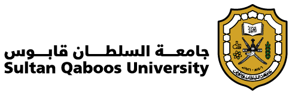

Systems thinking
Connecting technology, economics, and environmental impacts.
I’m Noman. I turn complex energy questions into pathways for cleaner fuels. My research connects process systems engineering, economics, and sustainability to understand what works, what it costs, and what it changes.

Publication records come from the public ORCID record and the ORCID-linked OpenAlex profile, supplemented by Google Scholar when connected. Matching records are combined; ORCID dates take precedence when supplied. Citation counts, h-index and i10-index depend on the provider and can differ. A dash means the value is unavailable, never zero. “Recent” means the window reported by Google Scholar. Cached values retain their last successful retrieval date.
Explore the ideas behind cleaner energy systems.
Sustainable aviation fuels are assessed across feedstocks, production costs, lifecycle emissions, and policy requirements.
Explore related projects ↗From emerging fuel pathways to the infrastructure that makes them possible.
Software for simulation, analysis, and communicating complex ideas. Hover, focus, or tap a tool to explore.
Connecting technology, economics, and environmental impacts.
Coordinating research tasks and multidisciplinary contributions.
Working across engineering, environmental science, and economics.
Turning complex analyses into clear findings and practical recommendations.
This list reflects the connected public records; unpublished and private work may not appear. Bibliographic dates follow the source record.
Building a systems perspective across research, industry, and continents.
PhD · Environmental Economics
UHasselt · 2026–2030 (expected)
MEng · Chemical Engineering
Yeungnam University · 2021–2023
BEng · Chemical Engineering
University of the Punjab · 2014–2018

Oman · Hydrogen systems research USA · Visiting graduate research South Korea · Process systems research CIRCEAustria · Project collaborationIndustry experience: Al-Hazm Engineering Solutions, Oman.
Selected organizations associated with projects I have contributed to.
News coverage of projects I have contributed to.
Coverage of the SQU study assessing green hydrogen production in north-west Oman.
Read the article ↗OMAN SUSTAINABILITY WEEK · 30 APRIL 2025Coverage of the SQU–SinoScience collaboration on hydrogen liquefaction for export.
Read the article ↗Global sustainable aviation fuel news and EU policy developments.
Only articles hosted by approved publishers are included. Policy pages are checked for content changes; a page change does not itself mean a law has changed. RED is the EU Renewable Energy Directive; CORSIA is an ICAO scheme.
Working on sustainable fuels, hydrogen, Power-to-X, or future energy systems? Let’s exchange ideas.
Get in touch ↗